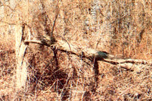

Many of you will recall our popular seven-part series on basic survival skills, "At Home in the Wilderness," which appeared in MOTHER NOS. 71 through 77. We're pleased to announce that its creator, outdoor expert Tom Brown Jr. (author of The Tracker, The Search, and Tom Brown's Guide to Wilderness Survival, and director of one of the country's largest tracking and wilderness survival schools), has agreed to resume the series for MOTHER's readers. In the issues to come, Tom will strive to provide us all with a deeper, more intimate understanding of nature and the art of survival.
Survival training involves far more than just learning the skills necessary to endure hardship. The mechanics of constructing a shelter, finding food and water, and building a fire are crucial, but they're only part of the whole. The art of survival is a dynamic philosophy unto itself, a doorway to greater understanding of yourself and the world in which you live.
Sadly, the conveniences our civilization has devised have separated most of us from nature. Because we no longer have to live directly from the earth, because we no longer have to hunt and gather our food, many of us no longer understand the web of life. People buy apples in a supermarket, but fail to acknowledge the tree from which the fruit was plucked or the energy drawn from the soil to produce that fruit. They buy bread but fail to see the wheat, first growing 'green in the fields, then turning golden and ripe, and finally falling at harvest. They buy meat neatly packaged in plastic trays, never thinking of the animals sacrificed.
This is not only regrettable, but also dangerous. As a species, the more we remove ourselves from nature, the more likely we are to unthinkingly abuse and destroy it. And as individuals, we place ourselves at risk each time we enter the natural world without a full knowledge of the ancient truths and realities of that world.
Granted, you may never be faced with a life-or-death situation. You may never need to actually use any of the skills you'll develop from survival training. But the attitude and perspective you'll gain while mastering those skills will be useful to you always. Because in order to learn how to survive, you must learn how to reconnect yourself with nature. And in so doing, you will become a much more aware, involved, vital creature of the Earth.
In my initial series of articles for THE Mother Earth News, I covered the fundamental techniques involved in providing shelter, food and water, and fire. In the features to come, I'll expand upon each of those subjects and explore a number of other areas of knowledge that can help keep you and your family alive during trying times.
First, though, I think it would be wise to review the information I discussed in issues 71 through 77; then we can proceed to build on those basics to form a firm foundation of a expertise. Of course, there isn't sufficient space here for me to completely explain everything I covered earlier. You'll have to go back and read the first articles in the series for additional details on such relatively complex techniques as starting a fire with a bow drill or stalking and trapping.
If you find yourself lost or for some other reason stranded in the woods, the first thing to remember is to stay calm. Fear can be deadly-literally-if you let it take control of your thoughts and actions. This, in fact, is another reason why learning survival skills is so important. If you know before you go into the wilderness that you'll be able to cope with any situation that might arise, you won't be as likely to panic if you are faced with some kind of difficulty.
Keep a cool head. Think your problem through. Remind yourself that nature can provide everything you need for as long as you need it.
Remember, too, to focus your energies on filling those needs one at a time, in order of priority: In most cases, you should concentrate on providing shelter first, then water, then fire, and finally food. The first two items are the most critical. You can live for well over 30 days without eating, but for only a few days without water. Fire can be an outright luxury, but an adequate shelter-one that gives you complete protection from the elements-is absolutely essential. If you're caught without shelter in inclement weather, you can die overnight.
Building a Home: Although there are many kinds of emergency shelters, I believe the leaf (or debris) but is the best choice; not only is it long-lasting and well insulated, but it's also easy to construct.
First, find a well-drained site for your shelter-one that's not near any bodies of water (which often attract insects and encourage heavy dews) and that's protected by such natural windbreaks as dense woods, rock outcroppings, boulders, or sloping land. Check, too, to make sure there are no dead limbs or other objects above your campsite that could fall on you or your shelter.
Now, find a long, strong pole to serve as the ridge of the shelter and prop one end up on a stump, rock, forked tree, or other support that's at least two feet off the ground. Then lay smaller sticks at 45° angles against the sides of the pole, to form a wedge-shaped "rib cage." (Be sure to leave an opening on the east side of your hut for a door.) Then pile debris-leaves, grasses, ferns, pine boughs, sage, or any other light, fluffy vegetation-on top of the smaller branches to a thickness of at least two feet. And finally, lay more branches over the top of the roof to keep the natural insulation in place.
With that done, stuff the inside of your hut with the driest, softest material you can find-and when it comes time to get into the shelter, burrow into the filling just as you would a sleeping bag. (If your hut's large enough, you may want to reserve a separate nonsleeping area for your waking hours . . . carpet the floor in that area with a relatively thin layer of leaves.)
Finding Water: Usually, water is easy to locate in the wild. But since pollutants-both chemical and biological-can often be found in even the most remote waterways, it's best to be choosy about your source of supply.
In fact, I suggest that you avoid lake and pond water altogether. And if you absolutely must use some other natural basin-such as a clear-running stream, or a hollow in a log or rock- never drink water from it directly. Instead, filter the liquid through cloth first and then boil the water for 20 minutes. Even then, you'll have neutralized only bacterial contaminants. Chemical pollutants may still be present.
Moisture-laden plants such as cactus and thistle (which can be eaten) and sap-bearing trees (which can be tapped-hardwoods in the spring and sycamores year-round) offer safer water, but seldom in sufficient quantities to serve as a primary drinking supply. Use them only to supplement your water intake or to temporarily stave off thirst.
The best techniques for gathering water are [1] building and using a solar still, and [2] collecting morning dew. You'll find complete instructions for putting together a solar still in MOTHER NO. 72. In my opinion, though, the latter method is the simplest and safest. All you need is a piece of cloth or a handful of dried, nontoxic grasses. Get up early in the morning and, working as quickly as you can (dew doesn't last long!), wipe the moisture from grass, rocks, and leaves, and wring the liquid into a container or your mouth. You'll be surprised at how effective this method is; even in the arid Southwest, my students have collected more than a quart a day!
Building a Fire: You'll seldom really need a fire in a survival situation; your shelter, if constructed properly, will keep you warm. However, a good blaze is useful for cooking food, making tools, sterilizing water, and melting snow. (Don't eat snow for its water you'll rob yourself of vital body heat.) And, of course, there's the undeniable (and undeniably valuable) cheering effect of a crackling fire.
When choosing a site for your fire, look for a spot that's clear of combustible brush and other vegetation (be sure to check for low overhead branches, too) and that's not in an open, breezy area or on an exposed ridge. Ideally, you should be able to position your fire somewhere between six and ten feetdepending upon wind and weather conditions-from your shelter's entrance.
Now, dig a dish-shaped fire pit; it should be about a foot deep in the center and have gently sloping sides. This will cradle your fire and keep the hot coals grouped together in the middle, where they'll burn slower and longer. It's also a good idea to build a U-shaped reflector around the side of the fire, with its "mouth" facing you. Damp wood, banked earth, or rocks can be used for this purpose. (In the latter case, though, be sure to collect the stones only from a high, dry place; water-soaked rocks may explode when heated.)
The cardinal rule to remember when gathering firewood is that any fuel found on the ground will likely be moist and hard to light, so never collect material from a damp forest floor for fire-starting wood. Instead, gather dead limbs from standing trees growing in open, sunny areas. If a branch breaks with a sharp snap, you'll know you have good firewood.
You'll need four types of fuel: [1] light, airy tinder (such as shredded bark, or the down from dried milkweed, cattail, or thistle) . . . [2] kindling (ranging from twig- to pencil-size wood) . . . [3] squaw wood (anything up to wrist width) . . . and [4] large firewood.
Now you can proceed to build your fire. First, lay down a bed of tinder, and then-starting with your smallest kindling and gradually progressing to the larger squaw woodbuild a tipi-shaped structure. Be sure, though, to leave an opening through which you can reach the interior of the pile to light the kindling; make this entrance on the wind ward side, so that the prevailing breeze will fan the flames for you.
You'll find the details for building and using a bow drill-in my opinion, the best overall survival fire starter-in MOTHER N0. 73. (Of course, it's always a good idea to carry a cigarette lighter, or matches in a waterproof container, when you go into the woods.)
Finding Food: Because so many people, when faced with a survival situation, immediately become concerned with locating food, I feel compelled to repeat myself here: Turn your attention to filling your belly only after the more urgent needs of shelter, water, andparticularly in cold weather-fire have been taken care of. If you're in reasonably good health, you can get along for at least a week without really needing nourishment-and for much longer than that before you'll suffer anything more serious than nagging hunger and the attendant stomach cramps.
Once you have procured the more pressing necessities of survival, though, you can proceed to assuage your appetite.
Wild plants are the most abundant and easily obtained survival foods. Unfortunately, I don't have the room here to begin even a cursory discussion of wild-plant identification, but most regular MOTHER readers already have at least some knowledge of the various forageables in nature's pantry. You'll find more details on this subject in an earlier article in this series, "Part V: Edible Plants" (MOTHER N0. 75). Any good field guide can be an invaluable learning aid, and the best way of all to become familiar with forageables in your area is to take a course from a local wild-foods expert.
Animals are the second most abundant food source in nature . . . and in some parts of North America, during the winter months, they may be the most plentiful. [EDITOR'S NOTE: Keep in mind, however, that the taking of animals without complying with your state's hunting and trapping laws is strictly illegal except in true life-or-death situations.] Virtually all mammals are edible, so you needn't be as concerned with proper identification as you should be in the case of plants. On the other hand, be careful never to consume any creatures that show signs of sickness . . . and, if possible, cook all meat before eating it. Remember, too, that insects-grubs, grasshoppers, cicadas, katydids, and crickets, for example-can be excellent sources of protein.
One of the simplest hunting weapons available to the survivalist in search of food is the throwing stick: Any straight, sturdy branch about 2-1/2 feet long and about half as thick as your wrist will do nicely. Don't underestimate the effectiveness of this basic club; primitive people the world over have used such weapons for centuries to obtain food. You can throw the club overhand or sidearm: Just point your left toe at your target (that is, assuming you're right-handed; lefties should reverse these instructions), bring the stick back in a cocked position, and with your eye on the mark, throw the stick with a snap-as if you were cracking a whip-to give it spin. Always carry your throwing stick when away from camp for any reason; you never know when a small bird or animal will appear in range.
For details on various techniques for trapping small game, see "At Home in the Wilderness, Part IV: Hunting & Traps" in MOTHER N0. 74. And you'll find a complete discussion of tracking animals in issue 77.
Now that we've reviewed some of the basic survival skills, I'd like to show you how to reduce your chances of ever having to use them. Lost-proofing-the art of always knowing where you are-is perhaps the most important technique I'll teach in this series, not only because it will help you avoid difficult situations, but also because it will enable you to confidently explore more of the natural world.
Contrary to popular belief, there is no such thing-to the best of my knowledge-as a "natural" sense of direction. Rather than having an inborn knack for knowing the correct path, some people more or less automatically (by habit or training) follow certain procedures that keep them on track. If they didn't, they'd act just like the rest of us when we lose our bearings: A right-handed person will gradually circle to the right, and a left-handed person will circle to the left. (Try walking blindfolded straight across an open field, and you'll see that this is true. Pick a cloudy, windless day, so that you won't have the sun and breeze to help keep you on your course.)
With a little effort, though, anyone can learn to resist the urge to circle; anyone can develop a so-called sense of direction.
Awareness is the key. Before you even set foot in the woods, prairie, or desert, you should have a very clear idea of where you will be going and the path you'll take to get there. There's simply no excuse for venturing any distance into a wild area without first studying-and taking with you-maps of the region. Take particular note of roadways, towns, airports, lakes, streams, rivers, and any other features that might help you determine your position should you become lost. Try to cultivate an "eagle's-eye view" of the landscape you'll be exploring. And by all means, carry a compass and know how to use it. [EDITOR'S NOTE: See the sidebar for access information on books about compasses and their use, and for instructions on how to put together a "solar" direction finder.]
Perhaps most important, maintain a sense of place when you're exploring. Watch for prominent landscape features-both near and distant-that you'll be able to spot on your return trip. Such landmarks are the street signs of the wilderness; you can't note too many of them. Hills, ridges, streams, trees, rocks-anything distinctive enough to be recognized later is worth filing mentally for future reference. Remember, too, that it's particularly crucial to look back frequently as you walk, in order to view the trail and landmarks as they'll appear on your return trip. As any individual who's been lost can attest, things can look surprisingly different when viewed from a new angle! The weather, the wind direction, and the sun's position can also help you maintain your bearings, but you shouldn't rely too heavily on such factors, because they'll change throughout the day.
The idea is to take in all the visual and sensory signposts in nature, to become so totally aware of your surroundings and your place in them that you can't possibly lose your way. After all, how can you be lost in the wilderness if you're . . . at home in the wilderness?
In conclusion, I'd like to repeat a point that I stressed throughout the first seven parts of this series: The time to learn and sharpen your survival skills is now, before you have to use them. Don't just read about the techniques: Go out and practice them . . . one at a time. Build a debris but this weekend, and sleep in it. Take a course in foraging. Read Part III of this series, which is about fire, and then make and use a bow drill. As you develop competence and gradually reestablish the umbilical cord connecting you to nature, you'll gain not only confidence in your ability to survive an emergency or catastrophe, but also an abiding sense of harmony that carries over into everything you do.
EDITOR'S NOTE: For more information on Tom Brown Jr.'s tracking and wilderness survival schools, write Tom Brown Jr., Box 173, Asbury, NJ 08802-0173, 201/479-4681. And for information on ordering the back issues mentioned above, turn to page 124.
Anyone who spends much time in the outdoors should carry and learn to use a compass, unquestionably an essential survival tool. There are many excellent books on the subject, including Be Expert With Map and Compass: The Orienteering Handbook, by Bjorn Kjellstrom (Scribner's, 1976), which is currently out of print but should be available in libraries, and Staying Found: The Complete Map and Compass Handbook, by June Fleming (Random, 1982), sold in most bookstores for $4.95.
In addition to honing your skills in the use of man-made direction finders, you may well want to teach yourself how to . . .
As everyone knows, the sun always rises in the east and sets in the west. It follows, then, that shadows invariably move in the opposite direction-a fact that you can use to plot true north any time the sun shines.
Find a stick about a yard long and push it into the center of a fairly level and brushfree spot of ground. The limb doesn't have to be vertical; you can lean it, if necessary, in any direction that gives you the most convenient shadow.
Once the stick is securely positioned, mark the tip of its shadow with a stone or twig. Then wait 15 or 20 minutes (or until the shadow's point has moved a few inches) and put a second pebble or bit of wood on the ground to denote the new location. Finally, draw a straight line in the dirt from the first marker through, and about a foot past, the second.
Now, if you stand with the toe of your left foot at the first location point and the toe of your right foot at the end of the line you drew, you'll be facing true north. The line, in other words, runs directly east and west, no matter where on the earth's surface you draw it!
|
|
 |
|
|
|
|
|